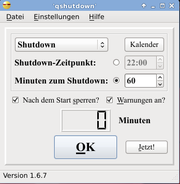

qshutdown
Dieser Artikel wurde für die folgenden Ubuntu-Versionen getestet:
Ubuntu 14.04 Trusty Tahr
Zum Verständnis dieses Artikels sind folgende Seiten hilfreich:
qshutdown  ist ein Programm, das den PC zeitgesteuert herunterfahren, neu starten, in den Standby und in den Ruhezustand versetzen kann. Man kann sowohl eine Uhrzeit, als auch eine Anzahl von Minuten angeben, zu der die entsprechende Aktion ausgeführt werden soll. Wenn nur noch wenig Zeit bis zur gewünschten Aktion verbleibt, warnt einen das Programm durch ein 3-maliges Wiedererscheinen, wobei diese Option auch abschaltbar ist.
ist ein Programm, das den PC zeitgesteuert herunterfahren, neu starten, in den Standby und in den Ruhezustand versetzen kann. Man kann sowohl eine Uhrzeit, als auch eine Anzahl von Minuten angeben, zu der die entsprechende Aktion ausgeführt werden soll. Wenn nur noch wenig Zeit bis zur gewünschten Aktion verbleibt, warnt einen das Programm durch ein 3-maliges Wiedererscheinen, wobei diese Option auch abschaltbar ist.
Mit Hilfe dieses Programms kann man die verbleibende Zeit stets im Auge behalten. Es soll einem ermöglichen, ohne Terminal auszukommen und vermeidet dabei die wall-Meldung, die beim shutdown-Befehl im Terminal manche Prozesse stören kann. Außerdem benötigt qshutdown in der Regel keine Root-Rechte.
Installation¶
Das Programm ist in den offiziellen Paketquellen enthalten. Folgendes Paket muss installiert [1] werden:
qshutdown (universe)
 mit apturl
mit apturl
Paketliste zum Kopieren:
sudo apt-get install qshutdown
sudo aptitude install qshutdown
PPA¶
Alternativ kann auch ein "Personal Package Archiv" (PPA) [2] genutzt werden.
Adresszeile zum Hinzufügen des PPAs:
ppa:hakaishi/qshutdown
Hinweis!
Zusätzliche Fremdquellen können das System gefährden.
Ein PPA unterstützt nicht zwangsläufig alle Ubuntu-Versionen. Weitere Informationen sind der  PPA-Beschreibung des Eigentümers/Teams hakaishi zu entnehmen.
PPA-Beschreibung des Eigentümers/Teams hakaishi zu entnehmen.
Damit Pakete aus dem PPA genutzt werden können, müssen die Paketquellen neu eingelesen werden.
Nach dem Aktualisieren der Paketquellen erfolgt die Installation wie oben angegeben.
Bedienung¶
 Nach der Installation kann das Programm über folgenden Befehl im Terminal gestartet werden:
qshutdown
Unter Unity findet man das Programm durch die Eingabe von qshutdown.
qshutdown verwendet qdbus um eine Shutdown/Neustart/Standby/Ruhezustand Anforderung an den GNOME- oder KDE-Session-Manager zu senden. Sollte das für GNOME nicht funktionieren, werden die Befehle gnome-power-cmd bzw. gnome-power-cmd.sh benutzt (alle drei Methoden lassen ein Speichern der Sitzung bzw. Session zu). Sollte dies immer noch scheitern, werden HAL und ConsoleKit ausprobiert.
Wenn das alles nicht hilft, wird der Befehl sudo shutdown mit den Optionen -P now oder -r now aufgerufen (es ist möglich, dass der Standby und/oder der Ruhezustand dann nicht funktioniert). Dieser Befehl benötigt allerdings Root-Rechte. Damit sudo shutdown ohne Passwortabfrage ausführbar ist, fügt man die Zeile
* ALL = NOPASSWD:/sbin/shutdown
in der Datei /etc/sudoers hinzu (die Datei sollte nur mit dem Befehl visudo bearbeitet werden) [3][4], wobei "*" für den Benutzernamen oder eine Gruppe steht und entsprechend angepasst werden muss.
Hinweis:
Falls der PC vor dem Erreichen des entsprechenden Zeitpunkts in den Standby oder Ruhezustand geht, bleibt das Programm stehen. Das heißt, dass die Zeitabfrage bzw. der Minuten-Countdown nicht weiter ausgeführt wird, bis der Standby/Ruhezustand endet. Wenn man z.B. 13:00 Uhr einstellt und der PC um genau 12:59 Uhr für 1 Minute und 10 Sekunden in den Standby geht, so wird qshutdown den eingestellten Termin (Shutdown etc.) erst am nächsten Tag um 13:00 Uhr ausführen.
TrayIcon¶
Das Symbol im Benachrichtigungsfeld (TrayIcon) verfügt über folgende Eigenschaften:
qshutdown anzeigen/verstecken mit

mit
 Kontextmenü anzeigen
Kontextmenü anzeigenbeim darauf Zeigen ohne Klick wird ein ToolTip angezeigt
Bei Unity wird das TrayIcon nicht mehr angezeigt. Weitere Informationen gibt es im Artikel Unity/Unity Desktop.
Konfiguration¶
Wenn man die vorgegebenen Einstellungen wie z.B. die Uhrzeit oder die Textgröße(n) anpassen möchte, kann man das in den Einstellungen tun. Weitere Details zu den einzelnen Optionen werden beim darauf Zeigen eingeblendet (Tooltipps).
Wer das Hauptfenster immer sichtbar auf dem Desktop zur Verfügung haben möchte, sollte sich Optionen wie "klebrig" und "nicht verschiebbar" in den Regeln des Fenster-Managers ansehen. Für Compiz siehe CCSM Fensterverwaltung.
Hinweis:
Unter GNOME 3 bzw. der GNOME Shell bzw. funktionieren die Shutdown-/Reboot-Befehle nicht mehr wie gewohnt. Ab der Version 1.6.4 von qshutdown ist es möglich, die entsprechenden Schnittstellen für diese Befehle in den Einstellungen zu wählen. Normalerweise sollte "automatisch" funktionieren, aber auf Grund eines Bugs scheint nur "ConsoleKit" problemlos zu arbeiten.
Administrator-Modus¶
Möchte man, dass der normale Benutzer das Programm weder beenden noch Einstellungen ändern können, befolgt man diese drei Schritte:
In die Datei /etc/sudoers folgende Zeile eintragen [3][4]:
* ALL = NOPASSWD:/usr/bin/qshutdown
wobei
*(wie oben) den Benutzernamen oder %Gruppennamen ersetzt.Im Terminal den folgenden Befehl ausführen:
sudo cp /usr/share/qshutdown/autostart/99qshutdown /etc/X11/Session.d/
Nach dem ersten Programmstart die ~/.qshutdown/qshutdown.conf editieren, in dem man im Hauptfenster ⇧ + E (oder in den Einstellungen auf "Konfigurationsdatei editieren) drückt und "
Lock_all=true" setzen. Anschließend mit Root-Rechten nach /root/.qshutdown/qshutdown.conf kopieren.
 Übersichtsartikel
Übersichtsartikel- Erstellt mit Inyoka
-
 2004 – 2017 ubuntuusers.de • Einige Rechte vorbehalten
2004 – 2017 ubuntuusers.de • Einige Rechte vorbehalten
Lizenz • Kontakt • Datenschutz • Impressum • Serverstatus -
Serverhousing gespendet von